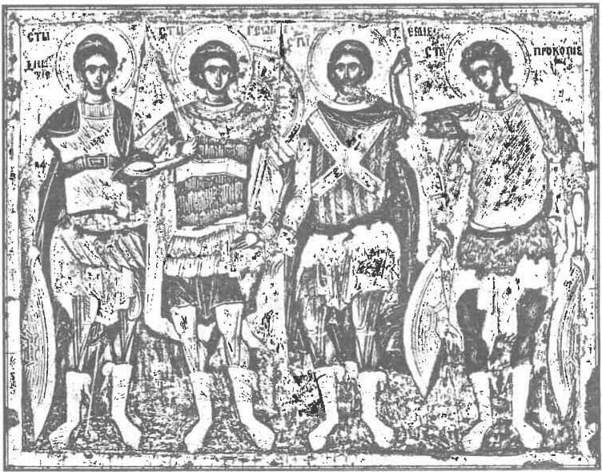

Din conferința Despre canonizarea sfinților români, Deva, 20 octombrie 2008, a doua parte.
În numele Tatălui și al Fiului și al Sfântului Duh. Amin. Doamne Iisuse Hristoase, Fiul și Cuvântul lui Dumnezeu Cel viu, pentru rugăciunile sfinților închisorilor, luminează sufletele noastre, izbăvește-ne de toate patimile și poftele! Alungă de la noi toată lenea, toată răutatea! Ajută-ne să fim cu adevărat ai Tăi și să mergem pe urmele lor! Ajută-ne, Doamne, să trăim și să murim pentru Tine! Ajută-ne, Doamne, să dăm mărturia cea bună în fața acestui veac apostat! Amin!
Iubiții mei frați și surori în Hristos,
Faptul că suntem împreună pentru a-i cinsti pe sfinții închisorilor mă bucură, este o minune, pentru că într-un ceas în cate lumea se afundă în patimi și în pofte de tot felul, unii, puțini la număr, avem curajul de a ne gândi la sfinții închisorilor, de a-i iubi pe sfinții închisorilor. Părintele Arsenie Papacioc spunea foarte frumos: „Comunismul a umplut cerul de sfinți”. E o datorie pentru noi să-i cunoaștem… Chiar dacă până acum sfinții din închisorile comuniste, care au pătimit pentru Hristos în România, nu au fost canonizați, am venit să vă cer să-i canonizăm în inimile noastre. Pentru că dacă noi vom ști să-i iubim ca pe niște sfinți mucenici, atunci Dumnezeu va rândui și canonizarea lor de către Biserică. Câtă vreme între noi și sfinții închisorilor va fi un zid de piatră, canonizarea lor va întârzia tocmai din pricina noastră. Cu multă vreme în urmă, un episcopal Argeșului, pe nume Iosif, a spus așa: „Măcar că toți creștinii îi cinstesc și îi prăznuiesc pe toți sfinții, pasămite, plăcuți lui Dumnezeu și rugători pentru dânșii, dar deosebită evlavie au către sfinții care ori se trag de neam din țara sau orașul lor, sau că au mărturisit acolo pentru Hristos în vremile tiranilor, sau că au stătut dascăli credinței, sau arhierei, sau pentru că au pustnicit acolo.” Deci trebuie să avem deosebită evlavie pentru sfinții care au trăit în țara noastră; să avem deosebită evlavie pentru mucenici care au pătimit pentru Hristos în țara noastră. La canonizarea Sfântului Calinic de la Cernica, părintele Stăniloae a exclamat: „O, Românie, care ascunzi cu smerenie pe sfinții tăi! Și Sfântul Dosoftei al Moldovei spunea: „Dar și dintre români mulți sunt sfinți, dară nu s-au căutat”.
Dar Dumnezeu vrea ca mărturiile despre sfinți să iasă la lumină
Voi încerca în cuvântul de astăzi să vă vorbesc despre unii sfinți români puțini cunoscuți - și anume sfinții închisorilor comuniste. Aș vrea să vă iau de mână și să vă duc cu zeci de ani în urmă, într-o chilie din închisorile comuniste, într-o celulă care, prin rugăciunile sfinților mucenici, se transforma în chilie mănăstirească. Aș vrea să vedeți cu ochii voștri cum au pătimit pentru Hristos sfinții închisorilor. Dar, neputând face aceasta, am să vă citesc dintr-o carte tulburătoare. Imn pentru crucea purtată, cartea lui Virgil Maxim, care alături de cartea lui Ioan Ianolide, Întoarcerea la Hristos — document pentru o lume nouă și de cea de-a treia carte, Sfântul închisorilor — Valeriu Gafencu, sunt cărți care pot schimba cu adevărat viața noastră.
Eu pot să dau mărturie că jertfa sfinților închisorilor, mie, cel puțin, mi-a schimba viața. A fost, cu ani în urmă, la București, un simpozion organizat de foști deținuți politici; am luat cuvântul și — pentru că în sală erau mulți dintre cei care pătimiseră pentru Hristos în închisori — am simțit nevoia să le mulțumesc și să le mărturisesc că atunci când aveam mari ispite și deznădejdea mă biruia, uneori, dacă nu reușeam să capăt putere citind Viețile Sfinților sau scrierile cuvioșilor, ale părinților din vremurile noastre, citeam din mărturiile celor care au pătimit pentru Hristos în închisorile comuniste și, văzând crucea pe care s-au suit ei, crucea mea mi se părea mult mai mică și ușor de purtat. Și dau mărturie că am simțit în viața mea ajutorul pe care mi l-au dat.
La un moment dat, Costache Oprișan, care este cunoscut ca mare sfânt al închisorilor, oarecum al doilea după Valeriu Gafencu, se afla în fața lui Țurcanu, unul dintre cei mai aprigi prigonitori ai lui Hristos. Și Țurcanu s-a așezat în fața lui Costache Oprișan și i-a zis: „Ați fost proiectați de la început (se adresa și celorlalți deținuți) să deveniți ceea ce, în intenția noastră, se cheamă «om nou» al societății socialiste și, în final, comuniste. Faptul că ați refuzat de la început să vă angajați conștient pe acest drum ne-a determinat să acționăm asupra conștiințelor voastre, pentru a vă regăsi pe voi înșivă, a face să vă înscrieți conștient fiecare pe coordonatele cinstei, ale idealurilor concepției materialist-dialectice, care vizează eliberarea omului de sub jugul dogmelor mistice și realizarea fericirii lui pe pământ.” Altfel spus: „noi v-am torturat pentru că voi nu vreți să deveniți oameni de nădejde ai societății”.
Așa vor spune și uneltele antihristului în vremurile de pe urmă: „Voi, creștinii, trebuie să fiți torturați pentru că nu vreți să deveniți oameni noi!”
Pentru că noi știm că modurile în care au încercat torționarii să-i modeleze pe sfinții închisorilor era tocmai apostazia și lepădarea de Hristos. Și cine ar fi avut curaj să stea în fața lui Țurcanu? Foarte puțini. Și unul dintre ei a fost Costache Oprișan. Pentru că sfinții închisorilor ne-au învățat să fim demni, să fim curajoși și, când dușmanul lui Hristos vorbește, să vorbim și noi. Să nu ne fie frică. Pentru că secretul prigonitorilor este tocmai trezirea fricii în sufletele celor prigoniți. Pe când, dacă robilor lui Hristos nu le este teamă de moarte, nu le este teamă de mucenicie, biruie, chiar dacă aparent sunt îngenuncheați - viața lor pământească sfârșindu-se în urma torturilor.
„Dacă acestea sunt metodele idealului de care vorbești, nu veți ajunge la nicio fericire”, a răspuns Costache Oprișan. Cuvintele sale l-au supărat foarte tare pe torționar, pe Țurcanu, care s-a apropiat de el, vrând să-l sfâșie. Costache Oprișan l-a privit fără să clipească. Da-ți-vă seama, să fii în fața unui torționar și nici măcar să nu clipești! La un moment dat, Țurcanu a făcut semn colaboratorilor, care s-au apropiat. I-a ordonat lui Costache Oprișan: „Culcă-te!”. Dintre deținuții de față, unii și-au plecat capetele, alții și-au închis ochii, pentru că nu suportau să vadă torturile la care urma să fie supus fratele lor. Doi torționari au trecut de o parte și de alta a lui Oprișan, care era întins cu fața în sus. Țurcanu, sprijinindu-se cu mâinile pe umerii altor doi torționari, s-a urcat pe pieptul lui Oprișan. Se lăsa cu toată greutatea pe torace, până ce aerul era evacuat. Apoi se lăsa pe gât, sufocându-l. Dădea din când în când drumul apăsării, astfel încât, în reprize scurte de respirație, victima, complet epuizată, părea că va expia. Supliciul se repeta până ce sângele începea să se prelingă din plămâni pe la colțul gurii, în icneli de tuse. Țurcanu spunea: „Scoală-te!” La sfârșit a zis: „Scoală-te! Așa ai să mori, încet, încet, picătură cu picătură!” E greu de imaginat ce-am fi făcut noi, în locul unor astfel de mărturisitori. Noi, care ne temem să înfruntăm necazurile din viața de zi cu zi. Să ne hrănim, iubiților, din jertfele lor!
Mărturisirea unui creștin - părintele Marcu de la Sihăstria
Am să vă citesc acum dintr-o altă carte tulburătoare, Mărturisirea unui creștin - părintele Marcu de la Sihăstria, un părinte puțin cunoscut deocamdată în țara noastră, dar despre care părintele Cleopa a zis: „Acesta este cel mai mare duhovnic al Sihăstriei!”. Acest monah era cel mai mare din Sihăstria pentru faptul că nevoința lui, rugăciunea lui, mucenicia lui l-au făcut să primească cunună de la Hristos. Și despre părintele Marcu, Avva Justin de la Petru Vodă spunea: „Părintele Marcu e mai sfânt decât toți sfinții din cimitirul Sihăstriei!”. Oare de ce știm unele lucruri frumoase despre părinții de la Sihăstria, iar despre părintele Marcu nu se știe aproape nimic? Pentru că, așa cum au fost prigoniți sfinții închisorilor în vremea lor, așa sunt prigoniți și în vremurile noastre. Pentru că se trece cu vederea jertfa lor pentru Hristos. Părintele Marcu atât de mult a suferit în închisoare, încât a primit porecla „fachirul”. Indiferent de torturile la care era supus, el răbda pentru Hristos. Și nu a leșinat decât atunci când i-a văzut pe alți frați ai săi întru Hristos supuși la torturi groaznice.
Au încercat să-l omoare pe părintele Marcu în fel și chip. La ridicarea barajului de la Bicaz, trebuiau dislocate mai multe stânci. Și părintele Marcu a fost trimis să strângă pietre în vagonet chiar când urma o explozie, ca, sub aparența unui accident de muncă, acest mărturisitor al lui Hristos să moară. Dar, deși s-a întâmplat de mai multe ori să fie la un pas de moarte din cauza pietrelor care cădeau, niciodată nu a fost atins de vreuna dintre ele. Adică Dumnezeu l-a păzit, indiferent cât de mult au încercat ceilalți să-l omoare. Și la un moment dat, robul lui Dumnezeu, pe numele de mirean Constantin, a avut o vedenie, „Atunci am avut un vis-vedenie, în care mă vedeam pe trompa unui elefant, care mă purta. De atunci, a început să îmi dispară frica. Mi-a luat Dumnezeu teama și mi-a dat curajul, care nu s-a mai depărtat de la mine. Hristos S-a sălășluit în inima robului Său, și, indiferent cât de mari au fost torturile la care a fost supus, acesta nu a mai cunoscut frica. Altădată a avut un alt vis-vedenie, în care a simțit ajutorul lui Dumnezeu. Se visa pe un vârf de munte, unde era o lumină strălucitoare, însă nu era soare nicăieri. Iată mărturia lui: „Am văzut deodată un vultur care se rotea în jurul vârfului, iar din ghearele vulturului a ieșit o pasăre albă, un porumbel cam ciufulit. Și a venit repede, zburând direct din ghearele vulturului, și mi-a intrat în piept, în partea dreaptă. Așa m-am trezit, iar partea dreaptă era fierbinte și eu eram cuprins de o pace adâncă. Mi-am dat seama că fusese Duhul Sfânt.”
Cu adevărat, Duhul Sfânt i-a întărit pe acești sfinți ai închisorilor
Nu avem niciun motiv să facem vreo diferență între mucenicii primelor veacuri și mucenicii ultimei prigoane, chiar dacă în țara noastră aceștia încă nu au fost canonizați. În Rusia au fost canonizați și există multe cărți - cum este cea a părintelui Mihail Polski, Noi martiri ai pământului rus - în care putem citi despre lucrarea duhovnicească a robilor lui Hristos.
În Rusia, la vreme de prigoană, Patriarhul Tihon a avut curajul să iasă fățiș la luptă împotriva comunismului. O astfel de mărturie i-a întărit pe mireni, i-a întărit pe călugări, i-a întărit pe preoți. Și bine ar fi fost ca și în țara noastră să fie o luptă fățișă împotriva comunismului, nu numai dusă de către mireni sau de către călugări sau de către preoți, ci și de către ierarhie și de către conducerea ierarhiei, așa cum s-a întâmplat în Rusia. Și pentru aceasta Patriarhul Tihon a fost canonizat și este cinstit azi ca Sfântul Patriarh Tihon.
La vreme de prigoană, ierarhii au de ales între a pactiza cu înțelepciunea acestui veac sau a da mărturia cea bună pentru Hristos și a intra în cetele sfinților. Nu pentru a fi canonizați trebuie să aibă curaj, ci iubindu-L pe Hristos și iubind poporul pe care trebuie să-l păstorească. Auziți mărturie mucenicească, scrisă în Pastorala Sfântului Tihon din 19 ianuarie 1918: „Ne întoarcem cu profundă durere spre acești monștri — zice Sfântul Patriarh — și le adresăm un avertisment de care să se teamă”. Și auziți ce le zice comuniștilor: „Smintiților, reveniți-vă! Încetați masacrele! Purtarea voastră nu e numai crudă, ci cu adevărat satanică, vrednică de focul cel veșnic în viața viitoare și de un blestem înfricoșător asupra urmașilor voștri aici, pe pământ. În numele puterii pe care ne-a dat-o Dumnezeu, vă excomunicăm, aruncând asupra voastră anatema, dacă purtați încă numele de creștin — căci prin naștere ați aparținut Bisericii Ortodoxe.”
Sfântul Patriarh Tihon a avut curajul de a-i da anatemei pe bolșevicii prigonitori ai Bisericii
El a arătat creștinilor că lupta împotriva comunismului trebuie să fie o luptă pe viață și pe moarte.
Iar creștinilor le-a zis: „Și voi, credincioși copii ai Bisericii lui Hristos, depărtați-vă de acest neam ucigaș, după cuvintele Sfântului Apostol Pavel: «Îndepărtați pe cel rău din mijlocul vostru.»” Și le-a mai zis așa despre comuniști: „Ei smulg Bisericii puterea și bunurile ei datorită armelor ucigașe, dar voi rezistați prin puterea credinței, îndreptând către Domnul rugăciunile voastre de cerere. Dacă e necesar să suferiți pentru Hristos, vă îndemn, copii mult iubiți ai Bisericii, să suferiți împreună cu noi!”
Acesta este, frații mei în Hristos, glasul adevăraților păstori! Și dacă vreodată va veni o nouă prigoană - și știm că spre sfârșitul lumii va fi din rău în mai rău - creștinii vor trebui să păstreze în piepturile lor acest îndemn la luptă adresat de Sfântul Patriarh Tihon. Pentru că știm că, în vremurile de pe urmă, credința multora se va răci. Există cărți cu profeții despre vremurile din urmă, în care se arată foarte clar cum mulți preoți și ierarhi vor cădea în apostazie. Există chiar o profeție a Sfântului Serafim de Sarov, cum că în vremurile din urmă mulți ierarhi vor cădea în apostazie… În acele vremuri creștinii vor trebui să știe că Sfântul Patriarh Tihon i-a chemat la mărturisire, că i-a chemat să nu le fe frică.
Este pur și simplu anormal ca Valeriu Gafencu, cel cunoscut ca sfântul închisorilor din România, să fie cinstit ca sfânt în alte colțuri ale lumii, dar la noi nu… În America, la mănăstirea Sfântului Gherman din Alaska, părinții îl au la mare evlavie, așa cum îi au pe mucenicii din Rusia, iar în țara noastră se știe încă foarte puțin despre jertfa sa. Ar fi normal, așa cum spunea și părintele Moise de la Oașa, să existe cât mai multe cărți din care oamenii să afle ce s-a întâmplat în țara noastră. Dați-vă seama că noi suntem într-un fel nepoții sfinților închisorilor! Trebuie să fim cu adevărat urmașii lor și să-i purtăm în inimile noastre.
Martirologii contemporane
Pentru a vă arăta continuitatea dintre sfinții Bisericii din primele veacuri, care au primit mucenicia, și sfinții din secolul al XX-lea, am să vă citesc două mărturii din cartea Martirologii contemporane, apărută la Editura Bizantină, ca să vedeți cum în secolul al XX-lea, în vremuri apropiate de ale noastre, în Turcia, creștinii au primit mucenicia. Chiar dacă în această carte nu apare cuvântul turc — a fost cenzurat pentru a nu apărea noi probleme cu statul turc — vedem din carte că e vorba de o țară apropiată Greciei, care a avut mare parte din teritoriu creștină și în care s-au aflat greci — e vorba de Turcia. Și, în Turcia zilelor noastre, unii dintre cei care trec la credința creștină sunt băgați la închisoare sub diferite acuze.
Un mărturisitor spunea următoarele: „De mulți ani însă (în celula în care pătimea - n.n.), ani de nesfârșită singurătate, nu m-am mai simțit niciodată singur. (Pentru că tot el spune: „La început mă topeam de plâns din pricina înfricoșării de anchete și a bătăii”). În ciuda frigului din cameră, sufletul meu, inima mea nu au înghețat niciodată. Când mă cuprindea deznădejdea, ridicam capul și Îl strigam: «Unde ești? Nu mă părăsi!» Și venea. Dacă Îl strigam de zece ori, de zece ori venea. Venea de fiecare dată când Îl strigam. Mereu aproape de mine, mereu alături de mine, totdeauna prietenos, totdeauna cu zâmbetul pe buze. Mi-a spus: «Voi fi totdeauna lângă tine, totdeauna alături de tine! Voi veghea pururea calea ta!» Înainte să trec prin experiența unei mari suferințe, m-a înștiințat dinainte. Într-o seară a venit ținând ceva în mâini, «Sunt ale tale — mi-a zis - sunt premiile tale, medaliile tale, cununile tale!» Erau degetele mele: două de la picioare și alte două de la mâini. «Mâine vei suferi mult, totuși nu te neliniști. De îndată ce va trece durerea, pune apă puțină și rănile se vor vindeca.» Așa s-a și întâmplat. Fără să-mi spună nimic, drept pedeapsă, mi-au tăiat un deget cu toporul. Mi-au făcut injecție și am dormit două zile. Când m-am trezit, sângele se oprise și am făcut ce-mi zisese, El este! L-am văzut de multe ori și L-am auzit vorbindu-mi — spune unul care a pătimit pentru Hristos. Și pătimitorii ne arată, fraților, că nouă nu trebuie să ne fie teamă de mucenicie.
Părintele Justin Pârvu spune că prigoana care se apropie va fi mai puternică decât cea prin care a trecut generația lui
M-am dus la el cu câteva săptămâni în urmă și l-am întrebat ce e de făcut. Pentru că prigonitorii credinței lucrează astăzi mult mai parșiv și puțini știu să le stea împotrivă. Și părintele Justin a răspuns: „În vremea de astăzi, în care preoții se feresc să dea mărturia cea bună, în care călugării se feresc să dea mărturia cea bună, mirenii trebuie să iasă la mărturisit. Eu, la vârsta voastră, înfundam închisorile. Acum e rândul vostru.”
Și trebuie să ne dăm seama, fraților, că legătura dintre noi și acești sfinți ai închisorilor trebuie să fie o legătură vie. Am să vă citesc o altă întâmplare, cu un creștin care a pătimit pentru Hristos în Turcia secolului al XX-lea: „Într-o zi, m-am mâniat în închisoare fiindcă mă acuzau de niște lucruri de care n-aveam habar. Și m-au pedepsit cu 50 de lovituri. Din obișnuință, fără să-mi dau seama, am zis: «Doamne, Prea Sfântă Fecioară, ajutați-mă! De ce trebuie să primesc aceste lovituri?» Mi-am făcut apoi semnul crucii în fața ofițerului închisorii. Ofițerul a căscat ochii mari și a început să țipe la paznici să mă ia cu forța. Am luat bătaie cruntă. Cel mai groaznic martiriu a fost că m-au legat cu o sfoară de umeri și m-au pus să pășesc pe gheață, pe cuburi mari le gheață, care se topeau încet. Simțeam că-mi dau duhul. Picioarele mele parcă se topeau. Obosisem foarte tare. Și acolo, în deznădejdea mea, L-am văzut. Era Domnul, cu mantia roșie, cu cununa de spini, ca o vedenie! Din clipa aceea, deși stăteam cu picioarele pe gheață, nu mi-a mai fost frig, ci mi-era cald și nici gheața nu se topea. A rămas acolo, înghețat, să mă ajute să pășesc pe gheață și să nu mă stranguleze frânghia. A doua zi dimineață, au venit paznicii și au fost uimiți să găsească bucățile de gheață aproape intacte, iar pe mine bucuros și în putere.” Era aproape imposibil ca deținutul respectiv să rămână în viață, pentru că ar fi trebuit să se miște pentru a nu muri de frig, și atunci gheața s-ar fi topit, frânghia l-ar fi strâns de gât și s-ar fi sinucis fără să vrea… Numai că, prin această minune, până și prigonitorii au înțeles că deținutul nu era singur. Hristos era cu el.
Părintele Arsenie mi-a zi: „Și când suntem singuri, suntem prea mulți!”
Ducându-mă odată la părintele Arsenie Papacioc, un mare mărturisitor care a trecut prin temnițele comuniste, ducându-mă la el cu inima plină de durere pentru că din ce în ce mai mulți se îndepărtează de linia Sfinților Părinți și pactizează — mai mult sau mai puțin — cu apostazia, părintele, ca să mă încurajeze, mi-a zis următorul cuvânt, pe care l-am păstrat în suflet și pe care l-am repetat de multe ori când am fost în ispită — în ispita că suntem puțini cei care vrem să-L mărturisim pe Hristos. Părintele Arsenie mi-a zis: „Și când suntem singuri, suntem prea mulți!”. Adică Hristos fiind cu noi, și când suntem doi, trei, suntem o ceată, suntem o armată întreagă, pentru că puterea noastră nu stă în număr. Sfinții mucenici n-au biruit lumea fiind sute de mii. Hristos a avut doisprezece apostoli - dintre care unul s-a lepădat de El - și ceilalți apostoli, împreună cu ucenicii lor, au reușit să cucerească o lume întreagă. Armata lui Hristos nu a fost făcută din soldați bine pregătiți, împărțiți pe legiuni sau pe alte unități militare. Armata lui Hristos a fost făcută din oameni puțini, dar pe care Duhul Sfânt i-a făcut tari și puternici și au putut să biruie această lume.
Și în zilele noastre, în care spiritul de turmă este mare și toți zic: „Să fim cu majoritatea, să fim cum sunt ceilalți, să acceptăm sodomia, să acceptăm căsătoriile homosexuale și toate formele de desfrâu, să fim cu majoritatea!”, Hristos ne spune altceva: „Fiți cu Mine! Și chiar dacă o să fiți doi sau trei, sunteți prea mulți.”
Așa cum spunea Sfântul Teodor Studitul, la vreme de prigoană nu contează încotro se duce majoritatea
Dacă sunt trei oameni în dreapta credință, cu aceia trei este adevărul, și nu cu ceilalți. Pentru că știm că la vreme de prigoană zeci de episcopi și sute de preoți și mii de monahi — și mireni și mai mulți — au căzut în erezie, dar Biserica, adevărul, a fost cu acei puțini mărturisitori.
Pe mine m-a impresionat curajul unui părinte cu viață sfântă din Grecia, Dimitrie Gagastakis, care a știut să ducă lupta cea bună pentru adevăr, opunându-se propagandei comuniștilor. La un moment dat, când a încercat să se ascundă de comuniști, a văzut în vis două armate strălucitoare de ofițeri greci, care i-au adus mai multe bucăți de pâine și i-au spus: „Nu te teme! Suntem de par- tea ta. Nu ți se va întâmpla nimic. Uite, ia aceste pâini, pentru că ai o cale lungă de făcut. O cale grea, prăpăstioasă, și de care nu poți scăpa ușor. Aceasta este, cu siguranță, calea spre biruință, dar îți va lua timp îndelungat. În orice primejdie, noi vom fi cu tine. Aceasta este adevărata cale către Dumnezeu.” Și zice părintele: „De atunci și până acum, m-am hotărât să proclam cu toată puterea:
Comuniștii sunt dușmanii Biserici, ai țării și ai familiei. Eu, să mă lepăd de Hristos? Niciodată!”
- a mărturisit părintele Dimitrie Gagastakis, pe care l-au condamnat chiar la moarte pentru că nu a vrut să pactizeze cu comuniștii.
Și mai mărturisește părintele: „Când au văzut că nu mă răzgândesc, l-au convins pe Episcopul Ioachim al Cozaniei să emită o hotărâre, în septembrie 1943, prin care mă condamna de două ori la moarte. Le eram o adevărată pacoste. (Nu puteau realiza nimic în sat, pentru că mărturia unui părinte stătea împotriva tuturor propagandiștilor comuniști.) Toți enoriașii mă ascultau pe mine, ca în fiecare situație dificilă. Eu eram primul care mă aruncam în pericol de dragul lor, făcând tot ce puteam pentru a-i salva. (Aceasta este vocea preoților iubitori de Hristos, fiecare fiind gata să-și pună sufletul pentru turma sa). Episcopul l-a trimis pe arhimandritul său, părintele Cozma, împreună cu cinci luptători de gherilă, pentru a isprăvi o dată cu mine, Au sosit vineri, 1 octombrie 1943. Eram în pădure, tăind lemne pentru familie. La întoarcere, la marginea satului am simțit un pericol. M-am dus direct acasă. Preoteasa mătura în tinda bisericii. I-am zis că am intrat în necaz. Îmi spuse că mă căutase un preot. Am fugit imediat la Arhangheli (adică în biserica Sfinților Arhangheli), la care aveam mare evlavie, și i-am implorat să-l facă pe preot să renunțe la intențiile sale. În acea noapte nu apăruse nimeni. Am stat acasă și am așteptat. În dimineața următoare, în jurul orei 10, un ofițer de gherilă însoțit de doi inși a venit să mă ia. Le-am deschis și le-am spus: „Știu foarte bine ce mă așteaptă, Așteptați puțin, vă rog, mă întorc imediat!” (Așa cum citim în viețile sfinților mucenici, unii dintre ei, înainte să primească moartea, îi rugau pe prigonitori să-i lase să facă ultima rugăciune, și prigonitorii, uneori, îi lăsau). Am aprins candela de la icoană, am stat și am cântat câteva imne, precum De tine se bucură toată făptura, cea plină de dar etc.”
Dați-vă seama, el era în fața morții și, în loc să se roage cu disperare, în loc să-i fie frică, îi cânta Maicii Domnului De tine se bucură toată făptura. Cu adevărat, fraților, pentru sfinți mucenicia e o bucurie! Am citit într-una din cărțile scrise de cei care au pătimit pentru Hristos în închisorile comuniste că un rob al lui Hristos, find anunțat că urmează să fie executat, l-a sărutat pe obraz pe temnicerul care i-a dat vestea respectivă - pentru că se bucura că va muri pentru Hristos. Și temnicerul și-a cerut scuze că-l duce spre locul de execuție. Cu adevărat, fraților, dați-vă seama, nu numai că nu s-a temut, ci l-a și sărutat pe obraz pe cel care i-a dat vestea cea bună că va primi mucenicia!
„După aceea, am chemat-o pe preoteasă și pe cele patru fete și le-am spus câteva cuvinte de mângâiere. «Ei bine, sunt pe calea muceniciei mele, Domnul mă cheamă, fie numele Lui binecuvântat. Voi primi mucenicia pentru Biserică.» A fost o despărțire dureroasă, cuvintele nu o pot descrie. Mișcat adânc, am plecat către locul de execuție. Pe cale, am cerut să mi se acorde zece minute pentru a mă duce la Arhangheli, în biserica Arhanghelilor. Voiam să mă rog lor ultima dată și să-mi iau rămas bun.”
Noi trăim după Hristos, nu după graba și zarva acestei lumi
Îmi permit să vă citesc mai multe pasaje din astfel de mărturii, deoarece conferința despre sfinții închisorilor este o conferință aparte. Vă mărturisesc — ca unul care am ținut conferințe pe foarte multe teme — că am observat cum oamenii sunt foarte interesați să le vorbești despre iubire, despre bucurie, despre cum să ajungă la liniște, și când le spui cuvinte din Sfinții Părinți despre dreapta credință, în privirile unor persoane din sală se simte plictiseala. Și trebuie să nu folosesc citate foarte lungi, pentru ca cei din sală să nu adoarmă de plictiseală sau să nu părăsească sala încă din prima jumătate de oră a conferinței. Însă acum suntem în familie, întrucât suntem oameni care îi iubim pe sfinții închisorilor, pentru că altfel n-am fi aici; îmi permit să vă dau citate cât mai lungi, înțelegând că noi nu mergem după ceasul lumii acesteia. Noi trăim după Hristos, nu după graba și zarva acestei lumi.
Părintele Dimitrie continuă: „Voiam să mă rog Arhanghelilor pentru ultima dată și să-mi iau rămas bun. Mi-au acceptat cererea și au așteptat afară. Am intrat în locaș, am căzut în genunchi în fața icoanelor și m-am rugat Arhanghelilor din tot sufletul, zicând următoarele cuvinte: «Dacă timpul meu nu a venit, scăpați-mă prin orice mijloace! Dacă totuși Domnul mă cheamă la mucenicie, fie binecuvântat! Numai rugați-vă Lui pentru mine, ca să mă miluiască. Pentru că om fiind, am păcătuit, fie în cuvânt, fie în faptă.» De îndată ce am început canonul de pocăință, zicând Binecuvântat este Dumnezeul nostru… am auzit o lovitură puternică în iconostas, iar icoana Arhanghelilor s-a mișcat, ca și cum ar fi spus: «Nu te teme, suntem cu tine!» Nu-mi amintesc ce am spus, eram tulburat. Mi-am luat curaj și am ieșit afară, dar n-am văzut pe nimeni. În tot satul era numai rumoare, tot satul alerga încolo și încoace. Nemții sosiseră pe neașteptate, stabilindu-și avanposturile la marginea satului. Gherilele au dispărut. Apoi am strigat: «Să învieze Dumnezeu și să se risipească vrăjmașii Lui și să fugă de la fața Lui cei ce-L urăsc pe El!”
Fiind condamnat la moarte, chiar înaintea morții, părintele Dimitrie a fost salvat de Dumnezeu. În altă situație el mărturisește cum un preot îi reproșa că nu a pactizat cu comuniștii: „Bine ai venit, eroul naționaliștilor! Iată-l aici pe eroul națiunii și al Bisericii! Îi vezi pe toți preoții din jurul nostru? Ei sunt cu noi! Avem de partea noastră mari oameni de știință și chiar și un episcop! Și tu crezi încă, omule de nimic, că numai tu poți face ceva?” Toți ceilalți trecuseră de partea comuniștilor, numai părintele Dimitrie Gagastakis nu…
Duhovnicul meu, părintele Iulian de la Schitul românesc Prodromu, din Athos, a spus așa: „În fața apostaziei și a ereziilor trebuie să ne ridicăm, căci vrăjmașul vine, prin slujitorii săi, iar oa- menii Bisericii, mărturisitorii, trebuie să-i iasă înainte. Pentru că dacă nu vor ieși, dușmanii vor distruge, încet, încet, Biserica. Și la început va ieși un mărturisitor, zicea părintele Iulian, Vor trece peste el. Apoi, altul se va gândi: «Uite cum a avut curaj fratele meu să dea mărturia cea bună!» Și va ieși al doilea mărturisitor. Și va trece tăvălugul și peste el. Apoi va sări al treilea mărturisitor. Și va trece tăvălugul și peste acești noi sfinți mucenici. Apoi, un preot se va gândi: «Cum oare mirenii dau mărturia cea bună, în vreme ce eu tac, în loc să Îl mărturisesc pentru Hristos?» Și va pătimi un preot pentru Hristos. Apoi alt preot se va gândi: «Ia uite, deși marea majoritate tac, preotul cutare a mărturisit» Și va sări și al doilea preot, și va sări și al treilea preot. Apoi, unul dintre episcopi va spune: «Deși frații mei ierarhi tac, uite cum Îl mărturisesc pe Hristos mirenii și preoții!» Și va ieși un ierarh la mărturisire. Și va trece tăvălugul și peste el. Dar așa, Biserica va rezista, prin jertfa mucenicilor, prin jertfa mărturisitorilor.”
Închei referirile despre pătimirea părintelui Dimitrie Gagastakis cu o ultimă mărturie. Și repet: îndrăznesc să citez cât mai mult, știind că mult mai mare putere au cuvintele lor, ale pătimitorilor, decât ceea ce v-aș putea spune eu.
„Pe 20 octombrie 1945, duminică dimineața, la puțin timp după ce am bătut clopotul, trupele de gherilă au încercuit satul. Un detașament de comuniști își făcuse tabăra în satul nostru, voind să ne distrugă pe toți. Tocmai intrasem în biserică. Auzind. toată agitația, mi-am făcut cruce, am cerut ajutorul Sfântului Nicolae și am fugit rapid. Au tras în mine cu puștile, dar nu m-a atins niciun glonț. M-am îndreptat către alt sat, în care se afla armata naționalistă.

La scurtă vreme după aceea, m-au ajuns 18 călăreți. Gloanțele au pătruns prin sutană, dar nu prin mine.” (Dați-vă seama, gloanțele treceau prin sutană, dar nu-l nimereau pe părinte!) „M-au înconjurat la aproape 50 de metri și au strigat: «Unde ai de gând să te duci, diavol bărbos, ei?» M-au înjurat foarte urât. Mi-am ridicat mâinile către cer și am strigat din adâncul sufletului: «Arhanghele Mihail, sunt în primejdie!»
Și iată, mare minune: Arhanghelul Mihail a apărut ca un fulger. Pe șeful lor l-a aruncat jos de pe cal, tăindu-i cu sabia curelele de la șa. Șeful și-a frânt șira spinării, timp în care ceilalți au înghețat pe loc. În cele din urmă, unul din ei mi-a spus: «Iartă-ne, păstorul nostru! Du-te pe calea ta! Ai dobândit păzitori puternici.» «Îți mulțumesc!» spusei eu. I-am iertat și m-am rugat lui Dumnezeu să-i lumineze ca să se poată pocăi și să devină oameni buni. «Întotdeauna să grăiți adevărul, — am spus eu — și Dumnezeu să fie ajutorul vostru!»”
La vreme de cumpănă, când robii lui Dumnezeu cer ajutorul, Dumnezeu le trimite ajutorul în chip minunat
Minunile fac parte din viața mărturisitorilor lui Hristos. Am să vă citesc acum o poezie, Imn morților, scrisă de Radu Gyr, unul din cei care au pătimit pentru Hristos în temnițele comuniste, o poezie care trebuie să ne arate nouă că locul sfinților închisorilor este în inima noastră. Să ne deschidem inima și să-i primim în ea!
„Morminte dragi, lumină vie,
Sporite-ntr-una, an de an,
Noi v-auzim curgând sub glie
Ca un șuvoi subpământean.
Ați luminat cu jertfe sfinte
Pământul, până-n temelii.
Căci arde țara de morminte
Cum arde cerul de făclii.
Ascunse-n lut, ca o comoară,
Morminte vechi, morminte noi,
De vi se pierde urma-n țară,
Vă regăsim mereu în noi.
De vi s-au smuls și flori și cruce
Și dacă locul nu vi-l știm,
Tot gândul nostru-n el v-aduce
Îngenuncheri de Heruvim.
Morți sfinți în temniți și prigoane,
Morți sfinți în lupte și furtuni,
Noi ne-am făcut din voi icoane
Și vă purtăm pe frunți cununi.
Nu plângem lacrimă de sânge,
Ci ne mândrim cu-atâți eroi.
Nu, neamul nostru nu vă plânge,
Ci se cuminecă prin voi!”
Cu adevărat, locul nu vi-l știm, nu știm unde se află moaștele lui Valeriu Gafencu, dar să ne rugăm lui Dumnezeu, și Dumnezeu ne va descoperi. Au fost sfinți care au avut zeci și zeci de ani moaștele ascunse și nimeni n-a știut de ele. Știți, de exemplu, cazul Sfântului Serafim de Sarov: zeci de ani nimeni nu mai știa unde sunt moaștele lui. Și le-au găsit tocmai într-un muzeu comunist, într-un muzeu al propagandei care batjocorea sfintele moaște.
Noi nu știm unde sunt moaștele noului mucenic Valeriu Gafencu, sfânt care este pictat într-o biserică, cea de la Spitalul Grigore Alexandrescu din București. Noi nu știm unde sunt moaștele acestui mărturisitor, dar Hristos știe și ne va descoperi dacă ne vom ruga pentru aceasta. „Doamne, luminează-ne! Trimite Duhul Tău Cel Sfânt peste noi și fă-ne vrednici să ne închinăm moaștelor mărturisitorilor Tăi, ale lui Valeriu Gafencu, Costache Oprișan și ale celorlalți!”
Să ne dăruiască Dumnezeu să ne închinăm lor și să primim binecuvântarea de a merge pe urmele lor! Aceasta trebuie să fie, cu adevărat, viața noastră: o viață de urmare a sfinților închisorilor.
Am să vă mai citesc o poezie a lui Radu Gyr, o poezie care ar trebui să ne dea curaj în această vreme în care din ce în ce mai mulți oameni se îndepărtează de mărturia sfinților mucenici. Îl avem în zilele noastre pe părintele Justin Pârvu, de exemplu, care este contestat tocmai pentru că dă mărturia cea bună. Despre el zicea actorul Dan Puric: „Părintele Justin este grupa sanguină nepătată a poporului român. Să fim un popor de Justini!… Parcă n-a trecut istoria prin el! El e frate cu veșnicia!” — mărturisea foarte frumos actorul Dan Puric. Cu adevărat, fraților, să fim urmași ai acestor mărturisitori, chiar dacă pare greu…!
În poezia Îndemn la luptă, Radu Gyr ne atrage atenția asupra unui fapt foarte important:
„Nu dor nici luptele pierdute,
Nici rănile din piept nu dor
Cum dor acele brațe slute
Care să lupte nu mai vor.
Cât inima în piept îți cântă,
Ce-nseamnă-n luptă un braț răpus?
Ce-ți pasă-n colb de-o spadă ruptă
Când te ridici cu-un steag mai sus?
Înfrânt nu ești atunci când sângeri
Și nici când ochii-n lacrimi ți-s,
Adevăratele înfrângeri
Sunt renunțările la vis!”
Să ne ajute Bunul Dumnezeu să mergem pe urmele acestor mărturisitori!
Amin!
Comentarii